import polars as pl
import matplotlib.pyplot as plt
import numpy as np
import yfinance as yf
import statsmodels.api as sm
import os
import math
from dotenv import load_dotenv
load_dotenv()
import pymc as pm
import arviz as az
import pandas as pd
from pathlib import Path
import pytensor.tensor as pt
from sample import sample_or_load
from compute_returns import compute_funded_returns, compute_credit_returns
from preprocessing import preprocess_factors;Calculating Multifactor Coefficients in Bond Return Regressions
The Data
First let’s import and preprocess historical bond data. The data was compiled from Bloomberg.
#Read the CSV
df = pl.read_parquet("historical_bond_data.parquet")
df_factor = pl.read_parquet("historical_factor_data.parquet")
NOTEBOOK_DIR = Path.cwd()
DATA_DIR = NOTEBOOK_DIR / "data"
#Now lets compute the funded returns
funded_data = compute_funded_returns(
df,
etf_data_path=DATA_DIR,
verbose=False
).with_columns(
pl.col("funded_total_return_pct")
.shift(-1)
.over("id_figi")
.alias("next_day_funded_total_return")
)
# and credit returns
all_bonds_credit = compute_credit_returns(
df,
etf_data_path=DATA_DIR,
verbose=False
)
new_data = preprocess_factors(funded_data, df_factor);
======================================================================
PREPROCESSING FOR FUNDED TOTAL RETURN ATTRIBUTION
======================================================================
[1/12] Building target...
Target: next_day_funded_total_return
Date range: 2021-01-01 to 2025-10-07
Observations before filtering: 5,653,086
[2/12] Filtering null targets...
Rows before: 5,653,086
Rows after: 3,235,506
Filtered out: 2,417,580 (last date + invalid returns)
[3/12] Ensuring raw risk columns...
[4/12] Creating tenor buckets...
[5/12] Creating duration x rating buckets...
dur_IG_3_5: 705,970 obs
dur_IG_6_8: 909,323 obs
dur_IG_9_14: 746,290 obs
dur_IG_14p: 604,228 obs
dur_HY_3_5: 69,842 obs
dur_HY_6p: 64,944 obs
[5b/12] Creating credit momentum factor (window=21, mode=relative)...
WARNING: credit_total_return_pct not found. Skipping credit momentum.
credit_excess_return_zscore: 0 valid obs
[6/12] Preserving categoricals...
[7/12] Setting weights (ao)...
[8/12] Creating tenor-relative OAS...
[9/12] Imputing...
[10/12] Clipping outliers...
[11/12] Z-scoring...
Z-scored 16 style factors
Kept 6 risk factors raw (duration buckets)
[12/12] One-hot encoding categoricals...
======================================================================
PREPROCESSING COMPLETE
Final shape: (3235506, 87)
Date range: 2021-01-04 to 2025-10-06
Unique dates: 1195
======================================================================
Let’s look at our most recent data on IBM bonds, plotting maturity against the z-spread.
ibm = funded_data.filter(pl.col("ticker")=="IBM", pl.col("date")==pl.col("date").max()).select("maturity", "zsprd_mid")
ibm.to_pandas().plot.scatter(x="maturity",y="zsprd_mid")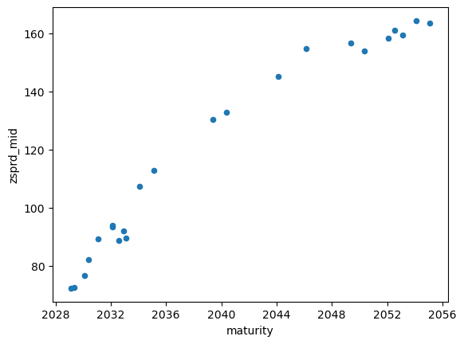
This makes sense. The longer it takes for a bond to mature, the more chances the company has to default within that time frame. Bonds that take a long time to mature are thus riskier and warrant a higher z-spread.
For the rest of our analysis, we’ll only look at BBB bonds.
#Here we'll get rid of the null values in our return column, and only look at BBB bonds
dataset = (new_data
.drop_nulls("next_day_funded_total_return")
.filter(
#pl.col("date")==pl.col("date"),
pl.col("snp_rating_bucket")=="BBB"))Our first model
Lets’s first examine how the DTS (Duration Times Spread) and industry sector of a bond (on the latest date we have data from) impacts its total return.
data = dataset.drop_nulls("next_day_funded_total_return").filter(pl.col("date") == pl.col("date").max())cleandata = data.drop_nulls(subset=["next_day_funded_total_return", "dts", "industry_sector"]).drop_nans(subset=["next_day_funded_total_return", "dts"])
cleandata
shape: (1_663, 87)
| bond_security_name | id_figi | date | maturity | bval_oas_mid_sprd | bval_dur_bid | dts | ticker | industry_sector_Basic Materials | industry_sector_Communications | industry_sector_Consumer, Cyclical | industry_sector_Energy | industry_sector_Financial | industry_sector_Industrial | industry_sector_Technology | industry_sector_Utilities | market_cap | equity_price | equity_daily_return | total_debt | revenue_growth_1yr | ebitda_growth_1yr | profitability_change_3yr | cpn | amt_issued | amt_outstanding | bond_age | oas_vol_90d | carry_total_daily_pct | duration_squared | credit_tightening_1m | snp_rating | snp_rating_bucket_AA | snp_rating_bucket_AAA | snp_rating_bucket_B | snp_rating_bucket_BB | snp_rating_bucket_BBB | … | earnings_to_price | operating_leverage | book_leverage | market_leverage_winsorized | mom_6m_equity | mom_6m_log_spread | mom_3m_log_spread | mom_6m_industry_equity | mom_6m_x_ratings | mom_6m_industry_equity_relative | px_bid | px_mid | px_ask | bond_daily_return_mid | bond_return_pct | zsprd_mid | zsprd_diff_mid | next_day_funded_total_return | bval_dur_bid_raw | px_mid_raw | tenor_bucket_0_3 | tenor_bucket_15p | tenor_bucket_3_5 | tenor_bucket_5_7 | tenor_bucket_7_10 | dur_IG_3_5 | dur_IG_6_8 | dur_IG_9_14 | dur_IG_14p | dur_HY_3_5 | dur_HY_6p | credit_excess_return_zscore | weight | tenor_relative_oas | industry_sector | snp_rating_bucket | tenor_bucket |
|---|---|---|---|---|---|---|---|---|---|---|---|---|---|---|---|---|---|---|---|---|---|---|---|---|---|---|---|---|---|---|---|---|---|---|---|---|---|---|---|---|---|---|---|---|---|---|---|---|---|---|---|---|---|---|---|---|---|---|---|---|---|---|---|---|---|---|---|---|---|---|---|---|---|---|
| str | str | date | date | f64 | f64 | f64 | str | u8 | u8 | u8 | u8 | u8 | u8 | u8 | u8 | f64 | f64 | f64 | f64 | f64 | f64 | f64 | f64 | f64 | f64 | f32 | f64 | f64 | f64 | f64 | str | u8 | u8 | u8 | u8 | u8 | … | f64 | f64 | f64 | f64 | f64 | f64 | f64 | f64 | f64 | f64 | f64 | f64 | f64 | f64 | f64 | f64 | f64 | f64 | f64 | f64 | u8 | u8 | u8 | u8 | u8 | f64 | f64 | f64 | f64 | f64 | f64 | f64 | f64 | f64 | str | str | str |
| "CHTR 8 3/8 07/15/33" | "BBG00000PQ76" | 2025-10-06 | 2033-07-15 | 203.1119 | 5.7942 | 0.117687 | "CHTR" | 0 | 1 | 0 | 0 | 0 | 0 | 0 | 0 | -0.332484 | 282.739861 | 0.00975 | 1.502048 | -0.528956 | -0.116488 | -0.194459 | 8.375 | 1.0000e9 | 1.0000e9 | 3.68894 | 6.440661 | 2.031003 | 33.572754 | 8.9453 | "BBB-" | 0 | 0 | 0 | 0 | 1 | … | 3.904505 | -0.522603 | 0.581072 | 3.189646 | 0.02641 | -0.195098 | -0.068911 | -1.361698 | 0.343324 | 0.035287 | 117.422677 | 117.564968 | 117.707258 | -0.236434 | -0.002007 | 201.099 | -0.001599 | -0.00058 | 5.7942 | 117.564968 | 0 | 0 | 0 | 1 | 0 | 0.0 | 5.7942 | 0.0 | 0.0 | 0.0 | 0.0 | 0.0 | 31622.776602 | 2.630455 | "Communications" | "BBB" | "5_7" |
| "C 6 1/8 08/25/36" | "BBG00000RJH9" | 2025-10-06 | 2036-08-25 | 161.2857 | 7.9933 | 0.12892 | "C" | 0 | 0 | 0 | 0 | 1 | 0 | 0 | 0 | -0.102231 | 98.050028 | 0.003172 | -0.674523 | -0.349204 | 0.071031 | 0.119105 | 6.125 | 2.0000e9 | 6.01788e8 | 3.68894 | 8.592213 | 1.082363 | 63.892845 | 16.4987 | "BBB" | 0 | 0 | 0 | 0 | 1 | … | -0.724058 | -0.677518 | 0.068593 | null | 0.007268 | -0.234152 | -0.163409 | -1.09035 | 0.101746 | 0.010787 | 106.503203 | 106.680198 | 106.857194 | -0.3973 | -0.00371 | 159.195 | 0.002002 | 0.000571 | 7.9933 | 106.680198 | 0 | 0 | 0 | 0 | 1 | 0.0 | 7.9933 | 0.0 | 0.0 | 0.0 | 0.0 | 0.0 | 24531.367675 | 0.524479 | "Financial" | "BBB" | "7_10" |
| "KMI 7.3 08/15/33" | "BBG000012D78" | 2025-10-06 | 2033-08-15 | 145.8852 | 6.062 | 0.088436 | "KMI" | 0 | 0 | 0 | 1 | 0 | 0 | 0 | 0 | -0.300963 | 27.930008 | -0.018623 | -0.104781 | -0.486055 | -0.291404 | -0.040176 | 7.3 | 5e8 | 5e8 | 3.68894 | 8.15491 | 1.571873 | 36.747844 | 16.3845 | "BBB" | 0 | 0 | 0 | 0 | 1 | … | 0.310345 | -0.550326 | -0.006964 | 1.533654 | 0.005842 | -0.199564 | -0.146549 | -1.048576 | 0.081791 | 0.008537 | 114.710178 | 114.810397 | 114.910616 | -0.179619 | -0.001562 | 143.927 | -0.008685 | -0.00072 | 6.062 | 114.810397 | 0 | 0 | 0 | 1 | 0 | 0.0 | 6.062 | 0.0 | 0.0 | 0.0 | 0.0 | 0.0 | 22360.679775 | -0.168994 | "Energy" | "BBB" | "5_7" |
| "MET 6.4 12/15/36" | "BBG0000339V5" | 2025-10-06 | 2036-12-15 | 169.8071 | 6.0788 | 0.103222 | "MET" | 0 | 0 | 0 | 0 | 1 | 0 | 0 | 0 | -0.313208 | 82.350026 | -0.000243 | 0.279243 | -0.029999 | 2.910203 | 0.320901 | 6.4 | 1.2500e9 | 1.2500e9 | 3.642468 | 8.067511 | 1.377844 | 36.951809 | 20.865 | "BBB" | 0 | 0 | 0 | 0 | 1 | … | -0.724058 | 0.747067 | 2.563901 | 1.473387 | 0.02009 | -0.236683 | -0.031934 | -1.09035 | 0.281256 | 0.023609 | 105.295501 | 105.398491 | 105.501481 | -0.037541 | -0.000356 | 189.192 | -0.014214 | 0.000617 | 6.0788 | 105.398491 | 0 | 0 | 0 | 1 | 0 | 0.0 | 6.0788 | 0.0 | 0.0 | 0.0 | 0.0 | 0.0 | 35355.339059 | 1.248622 | "Financial" | "BBB" | "5_7" |
| "WY 7 3/8 03/15/32" | "BBG00003PZL4" | 2025-10-06 | 2032-03-15 | 126.0971 | 5.1957 | 0.065516 | "WY" | 0 | 0 | 0 | 0 | 1 | 0 | 0 | 0 | -0.374882 | 24.96001 | -0.006369 | -0.826575 | -1.242746 | -1.502061 | -2.727076 | 7.375 | 1.2500e9 | 6.57473e8 | 3.68894 | 6.974192 | 1.586531 | 26.995298 | 11.67 | "BBB" | 0 | 0 | 0 | 0 | 1 | … | -0.41012 | -0.677518 | -0.077693 | 1.257039 | -0.040094 | -0.216983 | -0.178307 | -1.09035 | -0.561313 | -0.036575 | 114.527962 | 114.584678 | 114.641393 | -0.255403 | -0.002224 | 124.026 | 0.006084 | -0.000089 | 5.1957 | 114.584678 | 0 | 0 | 0 | 1 | 0 | 0.0 | 5.1957 | 0.0 | 0.0 | 0.0 | 0.0 | 0.0 | 25641.23632 | -0.456292 | "Financial" | "BBB" | "5_7" |
| … | … | … | … | … | … | … | … | … | … | … | … | … | … | … | … | … | … | … | … | … | … | … | … | … | … | … | … | … | … | … | … | … | … | … | … | … | … | … | … | … | … | … | … | … | … | … | … | … | … | … | … | … | … | … | … | … | … | … | … | … | … | … | … | … | … | … | … | … | … | … | … | … | … | … |
| "ORCL 5.2 09/26/35" | "BBG01XK0RRG7" | 2025-10-06 | 2035-09-26 | 149.9631 | 7.6929 | 0.115365 | "ORCL" | 0 | 0 | 0 | 0 | 0 | 0 | 1 | 0 | 0.989712 | 291.590112 | 0.019047 | 1.916014 | 0.303592 | 0.221899 | 0.3173 | 5.2 | 4.0000e9 | 4.0000e9 | -1.177982 | 1.522415 | 0.558268 | 59.18071 | null | "BBB" | 0 | 0 | 0 | 0 | 1 | … | -0.116725 | -0.535918 | 0.531662 | 1.121715 | 0.001383 | null | null | 0.678389 | 0.019362 | -0.030023 | 100.233249 | 100.268569 | 100.303889 | -0.469989 | -0.004665 | 148.835 | 0.003777 | -0.002008 | 7.6929 | 100.268569 | 0 | 0 | 0 | 0 | 1 | 0.0 | 7.6929 | 0.0 | 0.0 | 0.0 | 0.0 | 0.0 | 63245.553203 | 0.557976 | "Technology" | "BBB" | "7_10" |
| "ORCL 5 7/8 09/26/45" | "BBG01XK0RRH6" | 2025-10-06 | 2045-09-26 | 192.2464 | 11.7231 | 0.225372 | "ORCL" | 0 | 0 | 0 | 0 | 0 | 0 | 1 | 0 | 0.989712 | 291.590112 | 0.019047 | 1.916014 | 0.303592 | 0.221899 | 0.3173 | 5.875 | 2.5000e9 | 2.5000e9 | -1.177982 | 1.056826 | 1.316784 | 137.431074 | null | "BBB" | 0 | 0 | 0 | 0 | 1 | … | -0.116725 | -0.535918 | 0.531662 | 1.121715 | 0.008888 | null | null | 0.678389 | 0.124425 | -0.022518 | 99.944895 | 99.998508 | 100.052121 | -0.486329 | -0.004839 | 190.877 | -0.005165 | -0.005702 | 11.7231 | 99.998508 | 0 | 0 | 0 | 0 | 0 | 0.0 | 0.0 | 11.7231 | 0.0 | 0.0 | 0.0 | 0.0 | 50000.0 | 0.203359 | "Technology" | "BBB" | "10_15" |
| "ORCL 5.95 09/26/55" | "BBG01XK0RRP7" | 2025-10-06 | 2055-09-26 | 207.8835 | 13.8165 | 0.287222 | "ORCL" | 0 | 0 | 0 | 0 | 0 | 0 | 1 | 0 | 0.989712 | 291.590112 | 0.019047 | 1.916014 | 0.303592 | 0.221899 | 0.3173 | 5.95 | 3.5000e9 | 3.5000e9 | -1.177982 | 1.1987 | 1.461018 | 190.895672 | null | "BBB" | 0 | 0 | 0 | 0 | 1 | … | -0.116725 | -0.535918 | 0.531662 | 1.121715 | 0.009365 | null | null | 0.678389 | 0.131113 | -0.022041 | 99.002785 | 99.073836 | 99.144887 | -0.803359 | -0.008042 | 206.383 | 0.005231 | -0.007208 | 13.8165 | 99.073836 | 0 | 0 | 0 | 0 | 0 | 0.0 | 0.0 | 13.8165 | 0.0 | 0.0 | 0.0 | 0.0 | 59160.797831 | 1.072437 | "Technology" | "BBB" | "10_15" |
| "ORCL 6.1 09/26/65" | "BBG01XK0RRT3" | 2025-10-06 | 2065-09-26 | 227.8661 | 14.744 | 0.335966 | "ORCL" | 0 | 0 | 0 | 0 | 0 | 0 | 1 | 0 | 0.989712 | 291.590112 | 0.019047 | 1.916014 | 0.303592 | 0.221899 | 0.3173 | 6.1 | 2.0000e9 | 2.0000e9 | -1.177982 | 1.151115 | 1.607017 | 217.385536 | null | "BBB" | 0 | 0 | 0 | 0 | 1 | … | -0.116725 | -0.535918 | 0.531662 | 1.121715 | 0.008888 | null | null | 0.678389 | 0.124425 | -0.022518 | 99.257206 | 99.357785 | 99.458364 | -0.770017 | -0.007689 | 226.207 | 0.003643 | -0.000911 | 14.744 | 99.357785 | 0 | 0 | 0 | 0 | 0 | 0.0 | 0.0 | 0.0 | 14.744 | 0.0 | 0.0 | 0.0 | 44721.35955 | 2.183028 | "Technology" | "BBB" | "10_15" |
| "BKH 4.55 01/31/31" | "BBG01XL895X8" | 2025-10-06 | 2031-01-31 | 110.2576 | 4.6485 | 0.051253 | "BKH" | 0 | 0 | 0 | 0 | 0 | 0 | 0 | 1 | -0.397702 | 60.520025 | 0.005817 | -0.847318 | -1.449604 | -0.060022 | 0.055931 | 4.55 | 4.5e8 | 4.5e8 | -1.177982 | 0.669168 | -0.147091 | 21.608552 | null | "BBB+" | 0 | 0 | 0 | 0 | 1 | … | 2.384388 | -0.474511 | 0.054511 | 1.99068 | 0.030573 | null | null | 1.073603 | 0.458591 | -0.008637 | 100.136806 | 100.161628 | 100.18645 | -0.094429 | -0.000942 | 108.97 | -0.010874 | -0.000851 | 4.6485 | 100.161628 | 0 | 0 | 1 | 0 | 0 | 4.6485 | 0.0 | 0.0 | 0.0 | 0.0 | 0.0 | 0.0 | 21213.203436 | 1.157803 | "Utilities" | "BBB" | "3_5" |
Here we’ll create a Bayesian regression model where we assume the relationship between the next-day funded total return and DTS of a bond can be modeled with a StudentT distribution, where the mean of the distribution has a linear relation to DTS and the intercept is determined by the bond’s sector (partially pooled across sectors).
Formally:
\[y_i \sim \text{StudentT}(\nu,\ \alpha_{s(i)} + \beta \cdot \text{dts}_i,\ \sigma)\]
Priors: - beta (DTS coefficient): Normal(mean=0.001, sd=0.5) - alpha[sector]: Normal(mean=0, sd=0.05) - sigma (StudentT scale): Uniform(0, 0.2) - nu (degrees of freedom): Uniform(9, 12)
sector, categories = pd.factorize(cleandata["industry_sector"].to_pandas())
with pm.Model(coords={"figi":cleandata["id_figi"], "sectors":categories}) as model:
y = pm.Data("next_day_funded_total_return", cleandata["next_day_funded_total_return"], dims="figi")
x = pm.Data("dts", cleandata["dts"], dims="figi")
alpha = pm.Normal("alpha", 0, 0.05, dims="sectors")
beta = pm.Normal("beta", 0.001, 0.5)
sigma = pm.Uniform("sigma", 0, 0.2)
retrieved_alpha = alpha[sector]
mu = retrieved_alpha + x * beta
nu = pm.Uniform("nu", 9, 12)
y_hat = pm.StudentT("y_hat", mu=mu, nu=nu, sigma=sigma, observed=y, dims="figi")with model:
idata=pm.sample(nuts_sampler="nutpie")
idata=pm.sample_posterior_predictive(idata, extend_inferencedata=True)
pm.compute_log_likelihood(idata)Sampler Progress
Total Chains: 4
Active Chains: 0
Finished Chains: 4
Sampling for now
Estimated Time to Completion: now
| Progress | Draws | Divergences | Step Size | Gradients/Draw |
|---|---|---|---|---|
| 2000 | 0 | 0.65 | 15 | |
| 2000 | 0 | 0.67 | 7 | |
| 2000 | 0 | 0.71 | 7 | |
| 2000 | 0 | 0.63 | 7 |
Sampling: [y_hat]idataarviz.InferenceData
-
<xarray.Dataset> Size: 456kB Dimensions: (chain: 4, draw: 1000, sectors: 9) Coordinates: * chain (chain) int64 32B 0 1 2 3 * draw (draw) int64 8kB 0 1 2 3 4 5 6 ... 994 995 996 997 998 999 * sectors (sectors) object 72B 'Communications' ... 'Utilities' Data variables: alpha (chain, draw, sectors) float64 288kB -0.0006587 ... -0.... beta (chain, draw) float64 32kB 0.003785 0.00411 ... 0.003996 sigma_interval__ (chain, draw) float64 32kB -5.637 -5.565 ... -5.607 -5.601 nu_interval__ (chain, draw) float64 32kB -5.036 -6.752 ... -4.325 -3.153 sigma (chain, draw) float64 32kB 0.0007099 ... 0.0007362 nu (chain, draw) float64 32kB 9.019 9.004 ... 9.039 9.123 Attributes: created_at: 2026-05-19T23:05:29.256669+00:00 arviz_version: 0.20.0 inference_library: nutpie inference_library_version: 0.16.8 sampling_time: 0.3868880271911621 tuning_steps: 1000 -
<xarray.Dataset> Size: 53MB Dimensions: (chain: 4, draw: 1000, figi: 1663) Coordinates: * chain (chain) int64 32B 0 1 2 3 * draw (draw) int64 8kB 0 1 2 3 4 5 6 7 ... 993 994 995 996 997 998 999 * figi (figi) <U12 80kB 'BBG00000PQ76' 'BBG00000RJH9' ... 'BBG01XL895X8' Data variables: y_hat (chain, draw, figi) float64 53MB 3.651e-05 -0.002594 ... 0.0002415 Attributes: created_at: 2026-05-19T23:05:29.597169+00:00 arviz_version: 0.20.0 inference_library: pymc inference_library_version: 5.27.1 -
<xarray.Dataset> Size: 53MB Dimensions: (chain: 4, draw: 1000, figi: 1663) Coordinates: * chain (chain) int64 32B 0 1 2 3 * draw (draw) int64 8kB 0 1 2 3 4 5 6 7 ... 993 994 995 996 997 998 999 * figi (figi) <U12 80kB 'BBG00000PQ76' 'BBG00000RJH9' ... 'BBG01XL895X8' Data variables: y_hat (chain, draw, figi) float64 53MB 6.158 5.707 5.754 ... 4.614 5.912 Attributes: created_at: 2026-05-19T23:05:33.742113+00:00 arviz_version: 0.20.0 inference_library: pymc inference_library_version: 5.27.1 -
<xarray.Dataset> Size: 340kB Dimensions: (chain: 4, draw: 1000) Coordinates: * chain (chain) int64 32B 0 1 2 3 * draw (draw) int64 8kB 0 1 2 3 4 5 ... 995 996 997 998 999 Data variables: (12/13) depth (chain, draw) uint64 32kB 3 3 3 3 3 3 ... 3 3 3 3 3 3 maxdepth_reached (chain, draw) bool 4kB False False ... False False index_in_trajectory (chain, draw) int64 32kB -6 -4 4 -5 -2 ... 6 -5 3 -5 2 logp (chain, draw) float64 32kB 9.293e+03 ... 9.297e+03 energy (chain, draw) float64 32kB -9.288e+03 ... -9.294e+03 energy_error (chain, draw) float64 32kB 0.4545 0.07375 ... -0.09049 ... ... step_size_bar (chain, draw) float64 32kB 0.7183 0.7183 ... 0.6817 mean_tree_accept (chain, draw) float64 32kB 0.768 0.9581 ... 0.9849 mean_tree_accept_sym (chain, draw) float64 32kB 0.8528 0.9197 ... 0.936 n_steps (chain, draw) uint64 32kB 15 7 7 7 7 7 ... 7 7 7 7 7 tuning (chain, draw) bool 4kB False False ... False False diverging (chain, draw) bool 4kB False False ... False False Attributes: created_at: 2026-05-19T23:05:29.246805+00:00 arviz_version: 0.20.0 -
<xarray.Dataset> Size: 93kB Dimensions: (figi: 1663) Coordinates: * figi (figi) <U12 80kB 'BBG00000PQ76' 'BBG00000RJH9' ... 'BBG01XL895X8' Data variables: y_hat (figi) float64 13kB -0.00058 0.0005707 ... -0.0009109 -0.0008506 Attributes: created_at: 2026-05-19T23:05:29.256159+00:00 arviz_version: 0.20.0 inference_library: pymc inference_library_version: 5.27.1 -
<xarray.Dataset> Size: 93kB Dimensions: (figi: 1663) Coordinates: * figi (figi) <U12 80kB 'BBG00000PQ76' 'BBG00000RJH9' ... 'BBG01XL895X8' Data variables: dts (figi) float64 13kB 0.1177 0.1289 0.08844 ... 0.2872 0.336 0.05125 Attributes: created_at: 2026-05-19T23:05:29.252868+00:00 arviz_version: 0.20.0 inference_library: pymc inference_library_version: 5.27.1 -
<xarray.Dataset> Size: 456kB Dimensions: (chain: 4, draw: 1000, sectors: 9) Coordinates: * chain (chain) int64 32B 0 1 2 3 * draw (draw) int64 8kB 0 1 2 3 4 5 6 ... 994 995 996 997 998 999 * sectors (sectors) object 72B 'Communications' ... 'Utilities' Data variables: alpha (chain, draw, sectors) float64 288kB -0.04564 ... -0.00... beta (chain, draw) float64 32kB -0.551 -0.551 ... 0.004406 sigma_interval__ (chain, draw) float64 32kB 1.009 1.009 ... -5.576 -5.637 nu_interval__ (chain, draw) float64 32kB -0.8478 -0.8478 ... -4.351 sigma (chain, draw) float64 32kB 0.1465 0.1465 ... 0.0007101 nu (chain, draw) float64 32kB 9.9 9.9 9.9 ... 9.01 9.038 Attributes: created_at: 2026-05-19T23:05:29.243499+00:00 arviz_version: 0.20.0 -
<xarray.Dataset> Size: 340kB Dimensions: (chain: 4, draw: 1000) Coordinates: * chain (chain) int64 32B 0 1 2 3 * draw (draw) int64 8kB 0 1 2 3 4 5 ... 995 996 997 998 999 Data variables: (12/13) depth (chain, draw) uint64 32kB 1 0 0 3 2 0 ... 3 3 3 3 3 3 maxdepth_reached (chain, draw) bool 4kB False False ... False False index_in_trajectory (chain, draw) int64 32kB 1 0 0 3 1 0 ... 2 -2 4 -4 -4 logp (chain, draw) float64 32kB -1.876e+03 ... 9.289e+03 energy (chain, draw) float64 32kB 7.051e+03 ... -9.28e+03 energy_error (chain, draw) float64 32kB -211.3 0.0 ... -0.2312 ... ... step_size_bar (chain, draw) float64 32kB 4.637 1.373 ... 0.6817 mean_tree_accept (chain, draw) float64 32kB 0.5 0.0 0.0 ... 0.8198 1.0 mean_tree_accept_sym (chain, draw) float64 32kB 1.639e-92 0.0 ... 0.855 n_steps (chain, draw) uint64 32kB 2 1 1 7 3 1 ... 7 7 7 7 7 7 tuning (chain, draw) bool 4kB True True True ... True True diverging (chain, draw) bool 4kB True True True ... False False Attributes: created_at: 2026-05-19T23:05:29.250434+00:00 arviz_version: 0.20.0
Here we plot the marginal distributions of the posterior.
pm.plot_trace(idata)
plt.tight_layout()
plt.show()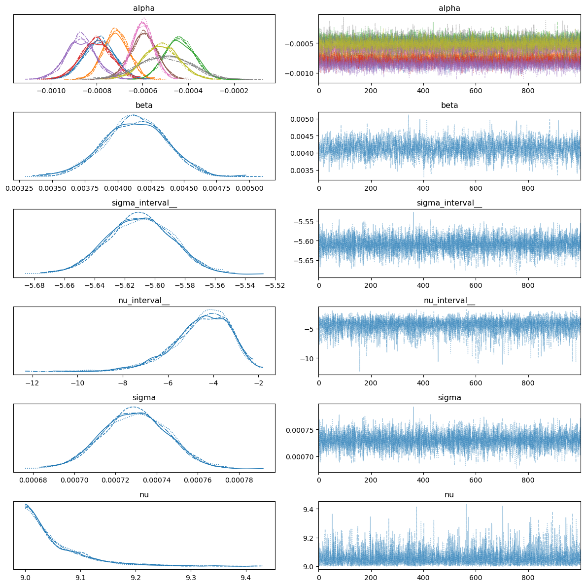
The trace plots look good- they have good mixing, and are pretty stationary.
Here we plot the posterior predictive distribution against the observed data.
pm.plot_ppc(idata)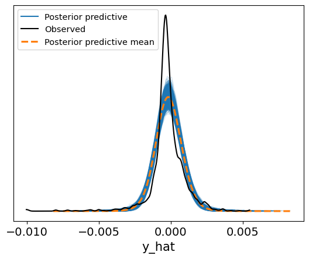
Our predictive mean is in line with the mean of the observed values, but it seems that our model is assigning too much weight to the tails.
Now we’ll plot the marginal distribution of beta in our posterior more clearly.
beta = idata.posterior["beta"]
az.plot_density(beta, shade=.8, outline=False)array([[<Axes: title={'center': 'beta'}>]], dtype=object)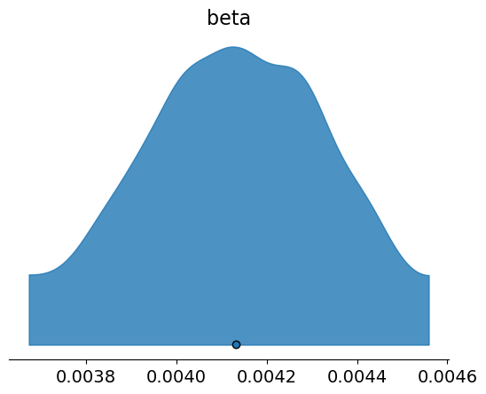
And here we’ll plot the means of our posterior’s alpha distributions across each sector.
az.plot_forest(idata, var_names="alpha", combined=True)array([<Axes: title={'center': '94.0% HDI'}>], dtype=object)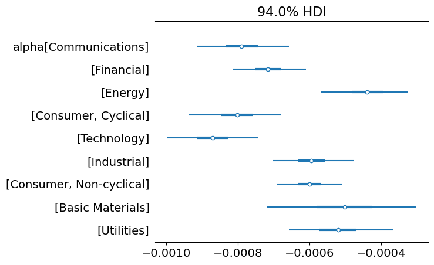
The Hyper Prior
Now let’s introduce a hyper prior on our alphas. Rather than treating each sector alpha as completely distinct, we treat each of them as a sample from the same distribution. Our prior essentially nudges the alphas closer together, all toward the mean of their hyper prior’s distribution.
sector, categories = pd.factorize(cleandata["industry_sector"].to_pandas())
with pm.Model(coords={"figi":cleandata["id_figi"].to_numpy().ravel().tolist(), "sectors":categories}) as modelHyperPriors:
y = pm.Data("next_day_funded_total_return", cleandata["next_day_funded_total_return"], dims="figi")
x = pm.Data("dts", cleandata["dts"], dims="figi")
alpha_mean = pm.Normal("alpha_mean", -0.0013, 0.0003)
alpha_var = pm.Exponential("alpha_var", lam=1)
alpha = pm.Normal("alpha", alpha_mean, alpha_var, dims="sectors")
beta = pm.Normal("beta", 0.001, 0.5)
sigma = pm.Uniform("sigma", 0, 0.2)
nu = pm.Uniform("nu", 9, 12)
retrieved_alpha = alpha[sector]
mu = retrieved_alpha + x * beta
y_hat = pm.StudentT("y_hat", mu=mu, nu=nu, sigma=sigma, observed=y, dims="figi")with modelHyperPriors:
hyper_idata=pm.sample(nuts_sampler="nutpie")
hyper_idata=pm.sample_posterior_predictive(hyper_idata, extend_inferencedata=True)
pm.compute_log_likelihood(hyper_idata)Sampler Progress
Total Chains: 4
Active Chains: 0
Finished Chains: 4
Sampling for now
Estimated Time to Completion: now
| Progress | Draws | Divergences | Step Size | Gradients/Draw |
|---|---|---|---|---|
| 2000 | 0 | 0.61 | 7 | |
| 2000 | 0 | 0.61 | 7 | |
| 2000 | 0 | 0.55 | 7 | |
| 2000 | 0 | 0.63 | 7 |
Sampling: [y_hat]Again, we’ll plot the posterior’s marginal distributions.
pm.plot_trace(hyper_idata)
plt.tight_layout()
plt.show()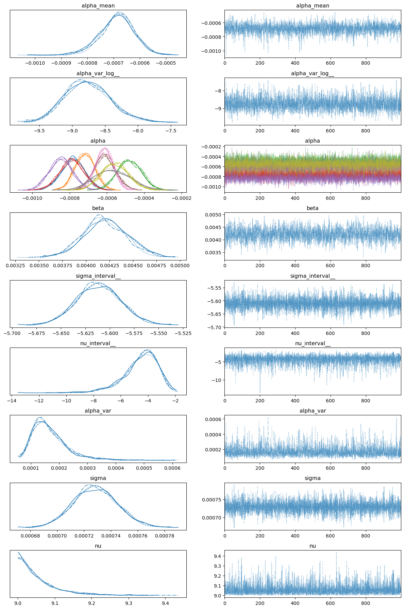
And again the trace plots look great.
And here is the distribution of our output values.
pm.plot_ppc(hyper_idata)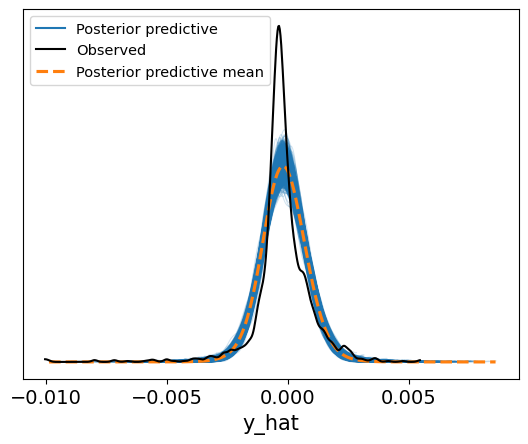
It seems that using the hyper prior doesn’t have much of an effect on our model.
az.plot_forest([hyper_idata, idata], var_names=["alpha", "alpha"], combined=True)array([<Axes: title={'center': '94.0% HDI'}>], dtype=object)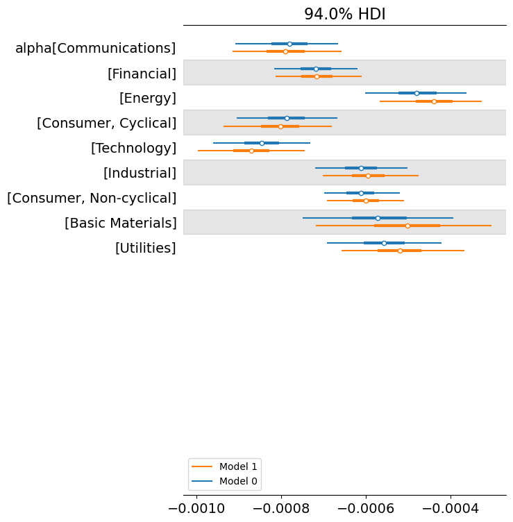
The mean of each of our alphas is getting pulled ever so slightly toward the mean of the higher-level distribution, but the models are basically the same.
model_loo = az.loo(idata)
modelHyperPriors_loo = az.loo(hyper_idata)
comp_loo = az.compare({"model": idata, "modelHyperPriors_loo": hyper_idata})
az.plot_compare(comp_loo, insample_dev=False);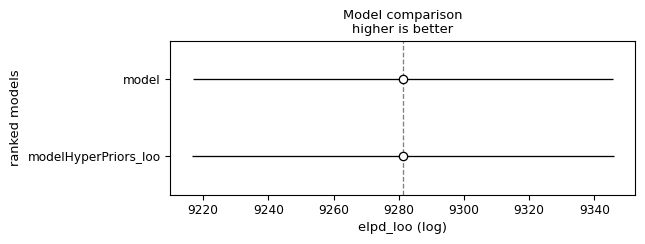
Our LOOs indicate that there is virtually no difference between the models.
Adding a new dimension: time
Now we’ll look at how our parameters change over time.
Here we get the data from the last 100 days (as opposed to just using our single most recent date).
data_days = dataset.filter(pl.col("date").is_in(pl.col("date").unique().top_k(100)));/var/folders/k5/hfspvb5n5r19qfhqg691wqw40000gn/T/ipykernel_92751/1317840012.py:1: DeprecationWarning: `is_in` with a collection of the same datatype is ambiguous and deprecated.
Please use `implode` to return to previous behavior.
See https://github.com/pola-rs/polars/issues/22149 for more information.
data_days = dataset.filter(pl.col("date").is_in(pl.col("date").unique().top_k(100)));# Dropping nulls
clean_data_days = data_days.drop_nulls(subset=["dts", "industry_sector"]).drop_nans(subset=["dts"])So we have the same model as before here, but with an added dimension: days. We are essentially fitting a new model to each day.
dts = pl.col("dts")
dts_z= (dts - dts.mean())/dts.std()
next_day_funded_total_return = pl.col("next_day_funded_total_return")
total_return_z = (next_day_funded_total_return - next_day_funded_total_return.mean())/next_day_funded_total_return.std()
clean_data_days = clean_data_days.with_columns(dts=dts_z, next_day_funded_total_return=total_return_z)sector, categories = pd.factorize(clean_data_days["industry_sector"].to_pandas())
date, days = pd.factorize(clean_data_days["date"].to_pandas())
coords={
"figi":clean_data_days["id_figi"],
"sectors":categories,
"date":days,
"obj-idx": np.arange(clean_data_days.height)}
with pm.Model(coords=coords) as cleanModelHyperPriors:
y = pm.Data("next_day_funded_total_return", clean_data_days["next_day_funded_total_return"], dims="obj-idx")
x = pm.Data("dts", clean_data_days["dts"], dims="obj-idx")
z = pm.Data("date", date, dims="obj-idx")
alpha_mean = pm.Normal("alpha_mean", 0, 1, dims="date")
alpha_var = pm.Exponential("alpha_var", lam=1, dims="date")
alpha = pm.Normal("alpha", alpha_mean[:, None], alpha_var[:, None], dims=("date","sectors"))
beta = pm.Normal("beta", 0, 1, dims=("date"))
sigma = pm.Exponential("sigma", 1, dims=("date"))
retrieved_alpha = alpha[date, sector]
retrieved_beta = beta[date]
mu = retrieved_alpha + x * retrieved_beta
y_hat = pm.Normal("y_hat", mu=mu, sigma=sigma[date], observed=y, dims="obj-idx")with cleanModelHyperPriors:
clean_hyper_idata = pm.sample(nuts_sampler="nutpie")
clean_hyper_idata = pm.sample_posterior_predictive(clean_hyper_idata, extend_inferencedata=True)
pm.compute_log_likelihood(clean_hyper_idata, extend_inferencedata=True)
#clean_hyper_idata=sample_or_load(fp="normal10.nc",sample_kwargs=dict(nuts_sampler="nutpie"))Sampler Progress
Total Chains: 4
Active Chains: 0
Finished Chains: 4
Sampling for 8 minutes
Estimated Time to Completion: now
| Progress | Draws | Divergences | Step Size | Gradients/Draw |
|---|---|---|---|---|
| 2000 | 53 | 0.16 | 31 | |
| 2000 | 76 | 0.17 | 31 | |
| 2000 | 27 | 0.11 | 31 | |
| 2000 | 38 | 0.14 | 31 |
Sampling: [alpha, alpha_mean, alpha_var, beta, sigma, y_hat]Here are the marginal distributions of our posterior.
pm.plot_trace(clean_hyper_idata)
plt.tight_layout()
plt.show()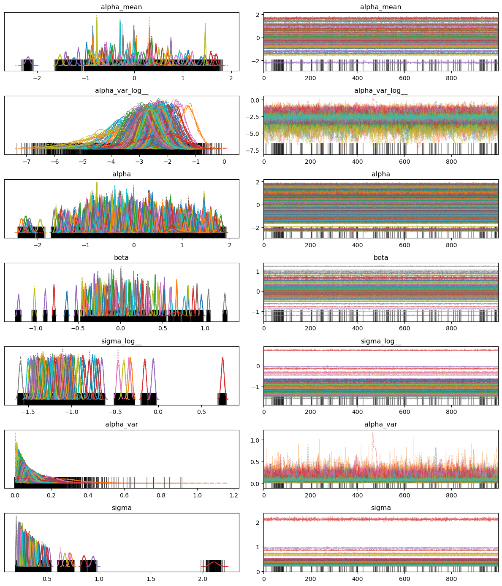
Note on the divergences: the black bars at the bottom of the trace plots represent iterations where the sampler had trouble navigating the posterior. A small number of divergences isn’t unusual in hierarchical models like this one, and the chains otherwise look pretty good.
It’s clear that we are dealing with a lot more parameters here.
clean_hyper_idata.posterior_predictive<xarray.Dataset> Size: 5GB
Dimensions: (chain: 4, draw: 1000, obj-idx: 166715)
Coordinates:
* chain (chain) int64 32B 0 1 2 3
* draw (draw) int64 8kB 0 1 2 3 4 5 6 7 ... 993 994 995 996 997 998 999
* obj-idx (obj-idx) int64 1MB 0 1 2 3 4 ... 166711 166712 166713 166714
Data variables:
y_hat (chain, draw, obj-idx) float64 5GB 1.541 -0.01862 ... 0.09722
Attributes:
created_at: 2026-05-20T01:39:31.574108+00:00
arviz_version: 0.20.0
inference_library: pymc
inference_library_version: 5.27.1pm.plot_ppc(clean_hyper_idata)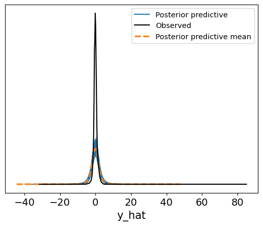
So with 100 days, the tails of the distribution of our output values get a lot heavier in comparison to the observed data.
Here is the mean of our cumulative sum of the DTS coefficient plotted against time.
beta_result = clean_hyper_idata.posterior.beta.cumsum(dim="date")
beta_mu = beta_result.mean(dim=["chain","draw"])
beta_hdi = az.hdi(beta_result).beta
fig, ax = plt.subplots(figsize=(14,4), dpi=144)
ax.plot(beta_mu.date, beta_mu)
ax.fill_between(beta_mu.date, *beta_hdi.values.T, alpha =0.25);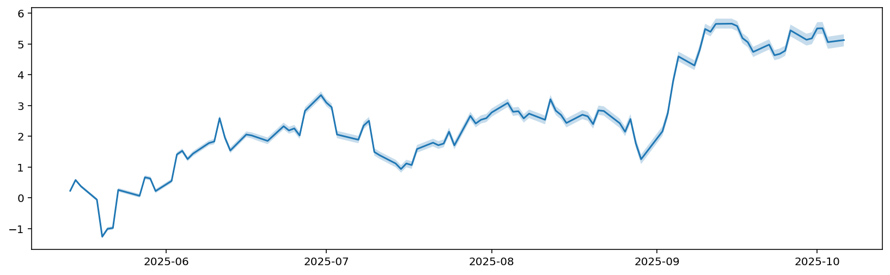
The cumsum is strongly positive and trending up. From ~0 in May to ~5 by October. This means DTS exposure paid off consistently over the period, that bonds with more credit risk earned more return. There also seems to be a regime shift in early September. The cumulative beta jumps from ~2 to ~5 very quickly, which means there were a few days in early september when high-DTS bonds massively outperformed low-DTS bonds.
Here is the mean of our cumulative sum of each alpha plotted against time.
alpha_result = clean_hyper_idata.posterior.alpha.cumsum(dim="date")
alpha_mu = alpha_result.mean(dim=["chain","draw"])
alpha_hdi = az.hdi(alpha_result).alpha
fig, ax = plt.subplots(figsize=(14,4), dpi=144)
ax.plot(alpha_mu.date, alpha_mu);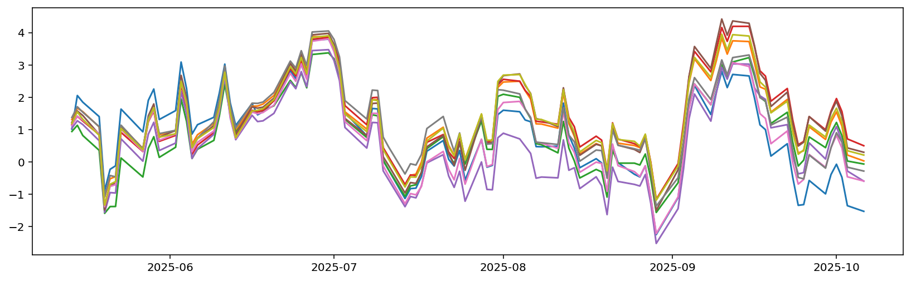
All of the sectors cluster around zero with a lot of dispersion. The end values range from -1.5 to 1 across sectors, which is small compared to the final beta cumsum, suggesting that most of the model’s explanatory power is coming from the DTS. It’s also clear that the sector alphas move in lockstep, generally maintaining consistent offsets. This means that daily market shifts in residual return dominate sector-specific moves.
More factors
Now we’ll be adding 17 more factors to our model. Let’s just look at the most recent 10 days.
multi_data_days = dataset.filter(pl.col("date").is_in(pl.col("date").unique().top_k(10)))
clean_multi_data_days = multi_data_days.drop_nulls().drop_nans();/var/folders/k5/hfspvb5n5r19qfhqg691wqw40000gn/T/ipykernel_92751/2744780320.py:1: DeprecationWarning: `is_in` with a collection of the same datatype is ambiguous and deprecated.
Please use `implode` to return to previous behavior.
See https://github.com/pola-rs/polars/issues/22149 for more information.
multi_data_days = dataset.filter(pl.col("date").is_in(pl.col("date").unique().top_k(10)))factors=["dts",
"market_cap",
"total_debt",
"revenue_growth_1yr",
"ebitda_growth_1yr",
"profitability_change_3yr",
"bond_age",
"current_profitability",
"book_to_price",
"debt_to_ebitda",
"market_leverage",
"roa_proxy",
"earnings_to_price",
"operating_leverage",
"book_leverage",
"carry_total_daily_pct",
"mom_3m_log_spread",
"mom_6m_industry_equity",]# Normalize data by z-scoring
clean_z = clean_multi_data_days.with_columns((pl.col(*factors, "next_day_funded_total_return") - pl.col(*factors, "next_day_funded_total_return").mean())/pl.col(*factors, "next_day_funded_total_return").std())Here we construct two more models, both extending the previous one to 18 factors instead of just DTS. The two models differ in how they treat the time dimension:
- Pooled model: fits a single set of factor coefficients across the entire time window.
- Per-day model: fits a separate set of coefficients for each day (as in the previous model).
The priors are unchanged: each factor coefficient is Normal(mean=0.001, sd=0.5), and the sector intercepts retain their original prior.
Different parameters for each day:
sector, categories = pd.factorize(clean_z["industry_sector"].to_pandas())
date, days = pd.factorize(clean_z["date"].to_pandas())
coords={
"figi":clean_z["id_figi"],
"sectors":categories,
"date":days,
"obj-idx": np.arange(clean_z.height),
"factors": factors
}
with pm.Model(coords=coords) as multiModel:
y = pm.Data("next_day_funded_total_return", clean_z["next_day_funded_total_return"], dims="obj-idx")
X = pm.Data("factor_matrix", clean_z[factors], dims=("objs-idx", "factors"))
alpha_mean = pm.Normal("alpha_mean", 0, 1, dims="date")
alpha_var = pm.HalfNormal("alpha_var", 1, dims="date")
alpha_offset = pm.ZeroSumNormal("alpha_offset", 1, dims=("date","sectors"))
#alpha = pm.Deterministic("alpha", alpha_mean + alpha_var * alpha_offset, dims="sectors")
alpha = pm.Deterministic("alpha", alpha_mean[:, None] + alpha_var[:, None] * alpha_offset, dims=("date", "sectors"))
beta = pm.Normal("beta", 0, 100000, dims=("date", "factors"))
#alpha = pm.Normal("alpha", 0, 1)
sigma = pm.Exponential("sigma", 10)
retrieved_alpha = alpha[date, sector]
#mu=alpha[sector] + X @ beta
mu = retrieved_alpha + (X * beta[date]).sum(axis=1)#(factor_vector * beta).sum(axis=1)
y_hat = pm.Laplace("y_hat", mu=mu, b=sigma, observed=y, dims="obj-idx")
with multiModel:
multi_idata= pm.sample(nuts_sampler="nutpie")
multi_idata = pm.sample_posterior_predictive(multi_idata, extend_inferencedata=True)
pm.compute_log_likelihood(multi_idata)
#sample_or_load(fp="laplace102.nc",sample_kwargs=dict(nuts_sampler="nutpie"))Sampler Progress
Total Chains: 4
Active Chains: 0
Finished Chains: 4
Sampling for 5 minutes
Estimated Time to Completion: now
| Progress | Draws | Divergences | Step Size | Gradients/Draw |
|---|---|---|---|---|
| 2000 | 0 | 0.07 | 127 | |
| 2000 | 0 | 0.07 | 127 | |
| 2000 | 0 | 0.08 | 63 | |
| 2000 | 0 | 0.07 | 63 |
Sampling: [alpha_mean, alpha_offset, alpha_var, beta, y_hat]Let’s look at the marginal distribution of the posterior.
pm.plot_trace(multi_idata)
plt.suptitle("Different parameters for each day")
plt.tight_layout()
plt.show()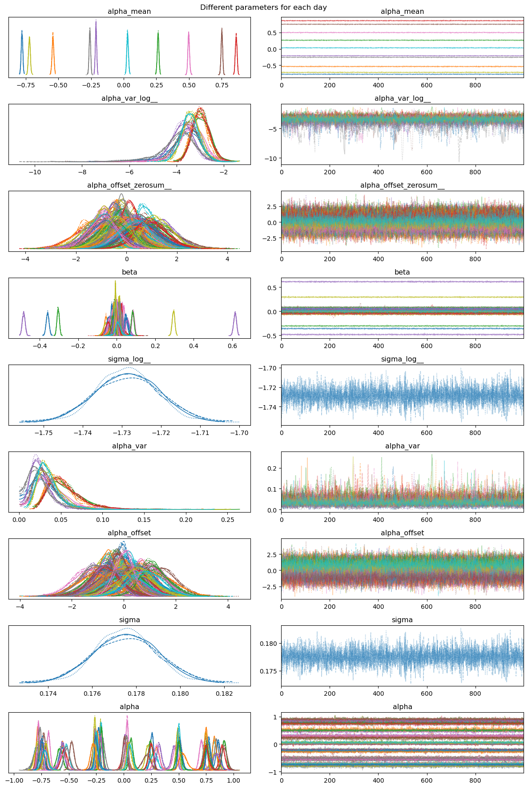
No distinction between days in parameters.
with pm.Model(coords=coords) as singleModel:
y = pm.Data("next_day_funded_total_return", clean_z["next_day_funded_total_return"], dims="obj-idx")
X = pm.Data("factor_matrix", clean_z[factors], dims=("objs-idx", "factors"))
alpha_mean = pm.Normal("alpha_mean", 0, 1)#, dims="date")
alpha_var = pm.HalfNormal("alpha_var", 1)#, dims="date")
alpha_offset = pm.ZeroSumNormal("alpha_offset", 1, dims="sectors") #, dims=("date","sectors"))
alpha = pm.Deterministic("alpha", alpha_mean + alpha_var * alpha_offset, dims="sectors")
#alpha = pm.Deterministic("alpha", alpha_mean[:, None] + alpha_var[:, None] * alpha_offset, dims=("date", "sectors"))
beta = pm.Normal("beta", 0, 100000, dims="factors")# dims=("date", "factors"))
#alpha = pm.Normal("alpha", 0, 1)
sigma = pm.Exponential("sigma", 10)
#retrieved_alpha = alpha[date, sector]
#nu = pm.Uniform("nu", 9, 12)
mu=alpha[sector] + X @ beta
#mu = retrieved_alpha + (X * beta[date]).sum(axis=1)#(factor_vector * beta).sum(axis=1)
y_hat = pm.Laplace("y_hat", mu=mu, b=sigma, observed=y, dims="obj-idx")
with singleModel:
single_idata= pm.sample(nuts_sampler="nutpie")
single_idata = pm.sample_posterior_predictive(single_idata, extend_inferencedata=True)
pm.compute_log_likelihood(single_idata)
#sample_or_load(fp="laplace102.nc",sample_kwargs=dict(nuts_sampler="nutpie"))Sampler Progress
Total Chains: 4
Active Chains: 0
Finished Chains: 4
Sampling for 28 seconds
Estimated Time to Completion: now
| Progress | Draws | Divergences | Step Size | Gradients/Draw |
|---|---|---|---|---|
| 2000 | 0 | 0.35 | 15 | |
| 2000 | 0 | 0.35 | 15 | |
| 2000 | 0 | 0.36 | 15 | |
| 2000 | 0 | 0.36 | 7 |
Sampling: [y_hat]Now lets look at the single parameter marginal posterior distribution.
pm.plot_trace(single_idata)
plt.suptitle("No distinction between days")
plt.tight_layout()
plt.show()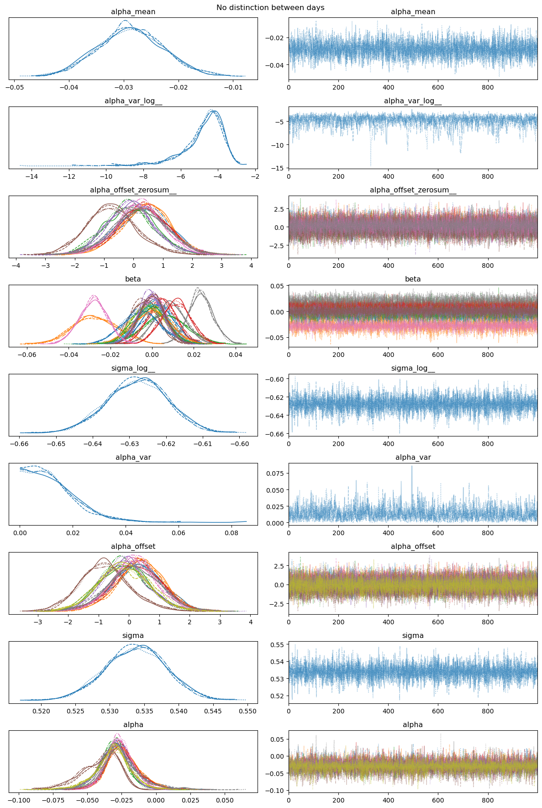
It’s clear that there are less parameters in this model than the previous one.
Now we’ll plot the distributions of the output values.
pm.plot_ppc(single_idata)
plt.suptitle("No distinction between days");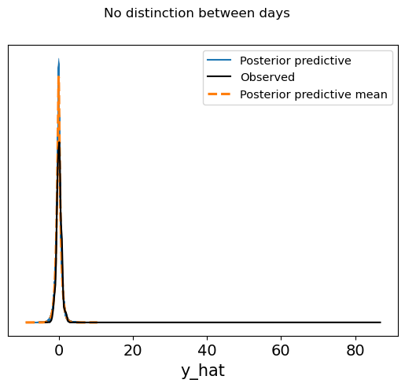
pm.plot_ppc(multi_idata)
plt.suptitle("Different parameters for each day");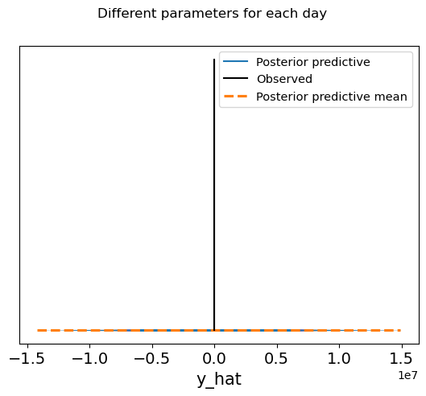
The shared-parameter model matches the observed distribution noticeably better than the “distinct day” model.
multi_loo = az.loo(multi_idata)
single_loo = az.loo(single_idata)
comp_loo = az.compare({"singleModel": single_idata, "multiModel": multi_idata})
az.plot_compare(comp_loo, insample_dev=False);/Users/isaacsaxonov/miniconda3/envs/regression/lib/python3.12/site-packages/arviz/stats/stats.py:795: UserWarning: Estimated shape parameter of Pareto distribution is greater than 0.70 for one or more samples. You should consider using a more robust model, this is because importance sampling is less likely to work well if the marginal posterior and LOO posterior are very different. This is more likely to happen with a non-robust model and highly influential observations.
warnings.warn(
/Users/isaacsaxonov/miniconda3/envs/regression/lib/python3.12/site-packages/arviz/stats/stats.py:795: UserWarning: Estimated shape parameter of Pareto distribution is greater than 0.70 for one or more samples. You should consider using a more robust model, this is because importance sampling is less likely to work well if the marginal posterior and LOO posterior are very different. This is more likely to happen with a non-robust model and highly influential observations.
warnings.warn(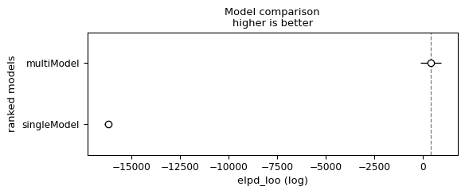
But the LOO of our “distinct day” model is significantly higher, which means it performs better outside of sample.
az.plot_kde(multi_idata.observed_data.y_hat.values)
plt.suptitle("Observed return distribution");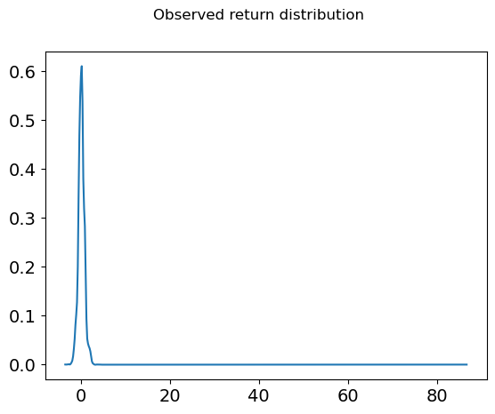
For reference, here is the distribution of observed next-day returns. Returns are tightly concentrated around zero, which means the vast majority of days see very small moves, with rare larger excursions. This is the target distribution any of our models needs to reproduce.
Here we plot the cumulative sum of the coefficients of our different factors over time.
beta = multi_idata.posterior["beta"]
#az.plot_density(beta, data_labels=["beta"], shade=.8, outline=False)
cols = 2
rows = math.ceil(len(factors) / cols)
fig, axes = plt.subplots(rows, cols, figsize=(12, 4 * rows), sharex=True)
axes = axes.flatten()
for i in range(len(factors)):
beta_result = multi_idata.posterior.beta.isel(factors=i).cumsum(dim="date")
beta_mu = beta_result.mean(dim=["chain","draw"])
beta_hdi = az.hdi(beta_result).beta
ax = axes[i]
ax.plot(beta_mu.date, beta_mu)
ax.fill_between(beta_mu.date, *beta_hdi.values.T, alpha=0.25)
ax.set_title(factors[i])
for j in range(i + 1, len(axes)):
fig.delaxes(axes[j])
plt.suptitle("Cumulative sum of betas over time", y=1.00, fontsize=16)
plt.tight_layout()
plt.show()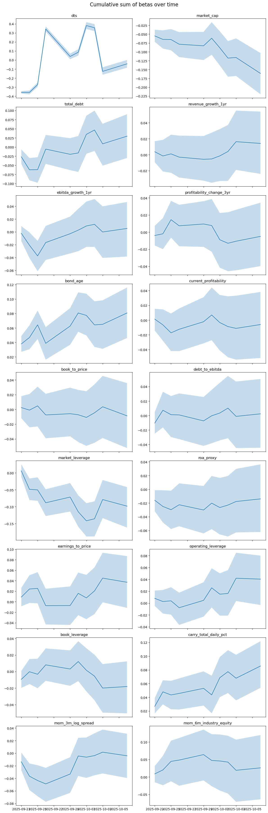
And now we’ll do the same with our intercepts across the different sectors.
alpha_result = multi_idata.posterior.alpha.cumsum(dim="date")
alpha_mu = alpha_result.mean(dim=["chain","draw"])
alpha_hdi = az.hdi(alpha_result).alpha
fig, ax = plt.subplots(figsize=(14,4), dpi=144)
ax.plot(alpha_mu.date, alpha_mu)
plt.suptitle("Cumsum of intercept values per sector");
#ax.fill_between(alpha_mu.date, *alpha_hdi.values.T, alpha =0.25);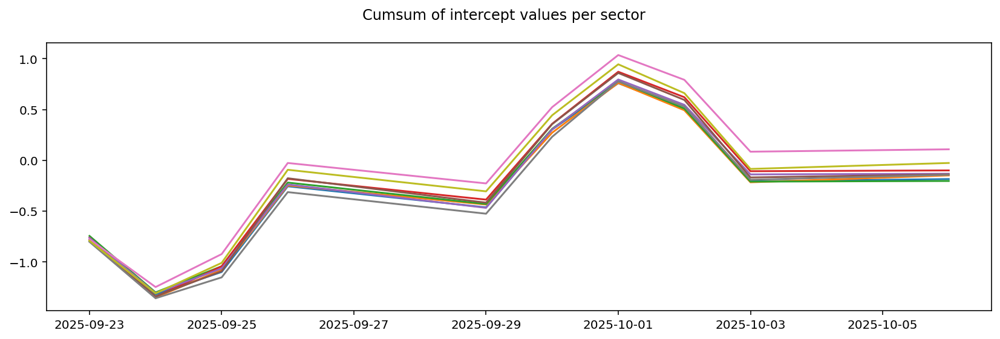
It’s clear that the intercepts for each sector move in the same way.
A prior on \(R^2\)
Now, with the same data before, we’ll add an additional element to our “distinct days” model: a prior on \(R^2\). We are essentially giving a suggestion to the model on how well the input data should be able to explain the output data. It will then figure out a way to distribute this explanatory power across the coefficients using a Dirichlet distribution, which distributes a fixed density across elements in a vector, with a tedency to conentrate the density on a few elements rather than spread it out across all of them. This means that we are also pushing the model toward selecting a few explanatory factors.
sector, categories = pd.factorize(clean_z["industry_sector"].to_pandas())
date, days = pd.factorize(clean_z["date"].to_pandas())
factors = ["dts",
"market_cap",
"total_debt",
"revenue_growth_1yr",
"ebitda_growth_1yr",
"profitability_change_3yr",
"bond_age",
"current_profitability",
"book_to_price",
"debt_to_ebitda",
"market_leverage",
"roa_proxy",
"earnings_to_price",
"operating_leverage",
"book_leverage",
"carry_total_daily_pct",
"mom_3m_log_spread",
"mom_6m_industry_equity",]
coords={
"figi":clean_z["id_figi"],
"sectors":categories,
"date":days,
"obj-idx": np.arange(clean_z.height),
"factors": factors
}
with pm.Model(coords=coords) as multiModelR:
y = pm.Data("next_day_funded_total_return", clean_z["next_day_funded_total_return"], dims="obj-idx")
X = pm.Data("factor_matrix", clean_z[factors], dims=("objs-idx", "factors"))
R2 = pm.Beta("R2", mu=1 / 3, nu=3, dims="date")
ω = R2 / (1 - R2)
ψ = pm.Dirichlet("ψ", 0.1 * np.ones(len(factors)), dims=("date", "factors"))
σ = pm.HalfNormal("σ", 1 / np.sqrt(1 - 2 / np.pi), dims="date")
Δ_β = pm.Laplace("Δ_β", 0, 1, dims=("date", "factors"))
σ_β = σ[:, None] * pt.sqrt(ω[:, None] * ψ / 2)
print(pm.draw(σ_β).shape)
print(pm.draw(Δ_β).shape)
beta = pm.Deterministic("beta", Δ_β * σ_β, dims=("date", "factors"))
#beta = pm.Normal("beta", 0.001, 0.5, dims=("date", "factors"))
alpha_mean = pm.Normal("alpha_mean", 0, 1, dims="date")
alpha_var = pm.HalfNormal("alpha_var", 1, dims="date")
alpha_offset = pm.ZeroSumNormal("alpha_offset", 1, dims=("date","sectors"))
alpha = pm.Deterministic("alpha", alpha_mean[:, None] + alpha_var[:, None] * alpha_offset, dims=("date", "sectors"))
retrieved_alpha = alpha[date, sector]
sigma = pm.Exponential("sigma", 1, dims=("date"))
mu = retrieved_alpha + (X * beta[date]).sum(axis=1)#(factor_vector * beta).sum(axis=1)
y_hat = pm.Laplace("y_hat", mu=mu, b=sigma[date], observed=y, dims="obj-idx")(10, 18)
(10, 18)with multiModelR:
r_idata = pm.sample(nuts_sampler="nutpie")
#r_idata=sample_or_load(fp="rprior5laplace.nc",sample_kwargs=dict(nuts_sampler="nutpie"))Sampler Progress
Total Chains: 4
Active Chains: 0
Finished Chains: 4
Sampling for an hour
Estimated Time to Completion: now
| Progress | Draws | Divergences | Step Size | Gradients/Draw |
|---|---|---|---|---|
| 2000 | 0 | 0.01 | 1023 | |
| 2000 | 0 | 0.01 | 1023 | |
| 2000 | 0 | 0.01 | 1023 | |
| 2000 | 0 | 0.01 | 1023 |
with multiModelR:
r_idata = pm.sample_posterior_predictive(r_idata, extend_inferencedata=True)
pm.compute_log_likelihood(r_idata)Sampling: [R2, alpha_mean, alpha_offset, alpha_var, sigma, y_hat, Δ_β, σ, ψ]Now let’s check our energy plot to make sure there was no energy loss in our sampling, and that we likely sampled the whole parameter space.
az.plot_energy(r_idata)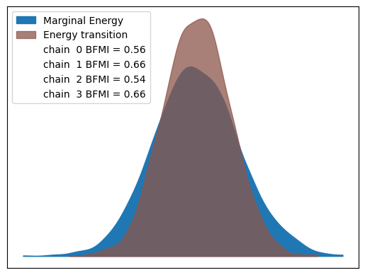
Looks good.
Now we’ll plot the marginal posterior distribution.
pm.plot_trace(r_idata)
plt.tight_layout()
plt.suptitle("Marginal Posterior Distributions", y=1.00, fontsize=16)
plt.show()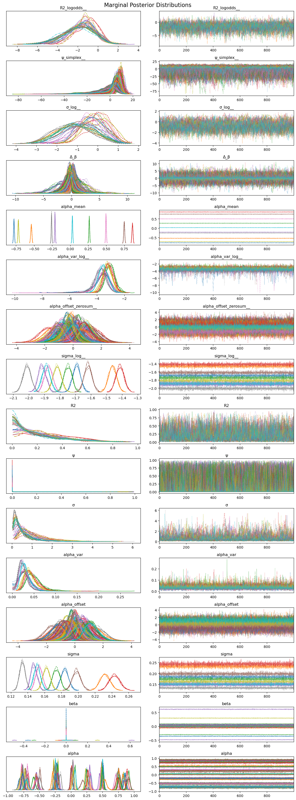
These trace plots look great.
pm.plot_ppc(r_idata)
#ax.set(xlim=(-5,5))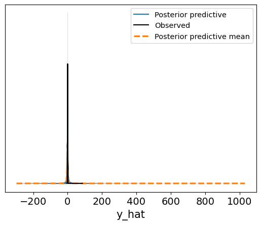
Again, our posterior predictive distribution looks off. Our tails are way too heavy. But let’s check the LOO.
multiModelR_loo = az.loo(r_idata)
multiModel_loo = az.loo(multi_idata)
comp_loo = az.compare({"multiModelR": r_idata, "multiModel": multi_idata})
az.plot_compare(comp_loo, insample_dev=False);/Users/isaacsaxonov/miniconda3/envs/regression/lib/python3.12/site-packages/arviz/stats/stats.py:795: UserWarning: Estimated shape parameter of Pareto distribution is greater than 0.70 for one or more samples. You should consider using a more robust model, this is because importance sampling is less likely to work well if the marginal posterior and LOO posterior are very different. This is more likely to happen with a non-robust model and highly influential observations.
warnings.warn(
/Users/isaacsaxonov/miniconda3/envs/regression/lib/python3.12/site-packages/arviz/stats/stats.py:795: UserWarning: Estimated shape parameter of Pareto distribution is greater than 0.70 for one or more samples. You should consider using a more robust model, this is because importance sampling is less likely to work well if the marginal posterior and LOO posterior are very different. This is more likely to happen with a non-robust model and highly influential observations.
warnings.warn(
/Users/isaacsaxonov/miniconda3/envs/regression/lib/python3.12/site-packages/arviz/stats/stats.py:795: UserWarning: Estimated shape parameter of Pareto distribution is greater than 0.70 for one or more samples. You should consider using a more robust model, this is because importance sampling is less likely to work well if the marginal posterior and LOO posterior are very different. This is more likely to happen with a non-robust model and highly influential observations.
warnings.warn(
/Users/isaacsaxonov/miniconda3/envs/regression/lib/python3.12/site-packages/arviz/stats/stats.py:795: UserWarning: Estimated shape parameter of Pareto distribution is greater than 0.70 for one or more samples. You should consider using a more robust model, this is because importance sampling is less likely to work well if the marginal posterior and LOO posterior are very different. This is more likely to happen with a non-robust model and highly influential observations.
warnings.warn(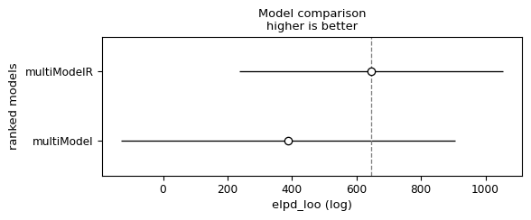
It’s unclear whether the prior on \(R^2\) has improved our model, but it’s clear that it’s not significantly worse.
Now let’s make sure our \(R^2\) distributions seem plausible.
az.plot_posterior(r_idata, var_names="R2");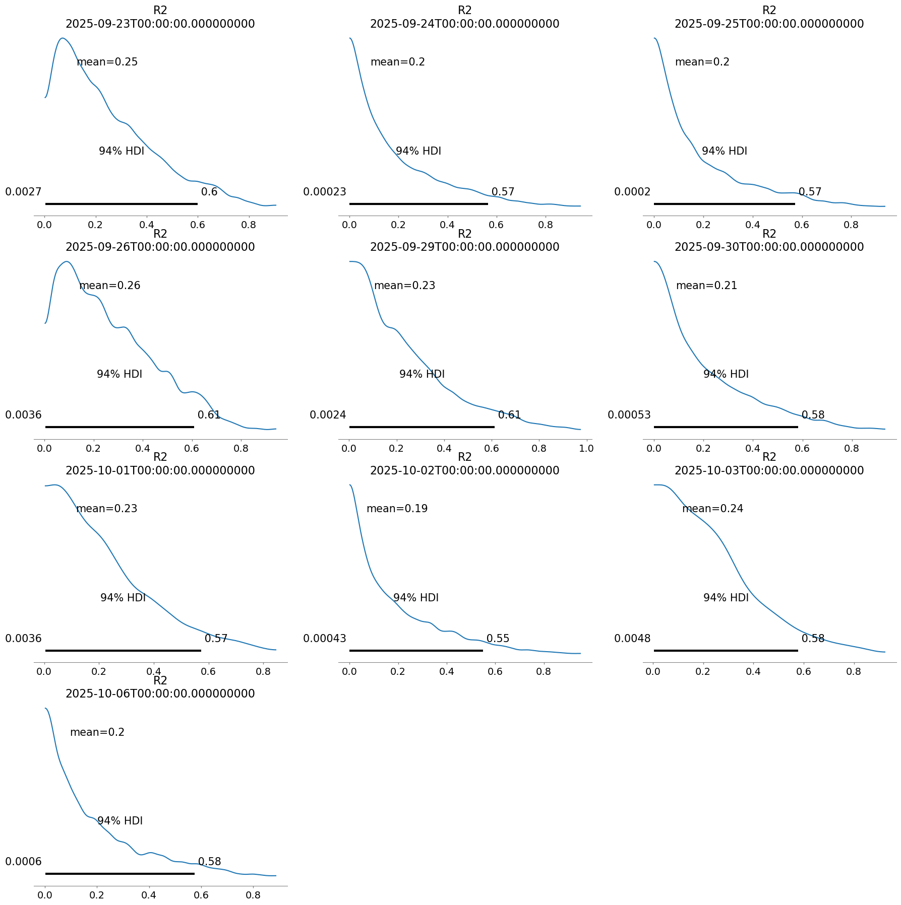
For each day, we plot the posterior distribution of R².
Posterior means are in the 0.2–0.26 range, indicating that the factor model explains roughly 20–25% of the variation in funded returns on a typical day.
The 94% HDIs are very wide (e.g. 0.003–0.60 on 2025-09-23, 0.0002–0.57 on 2025-09-25). The posteriors are right-skewed with substantial mass near zero, meaning the data doesn’t strongly rule out the possibility that the model has little explanatory power on a given day. This is partly a consequence of fitting a separate model per day. Each day’s R² is estimated from a single cross-section, so there isn’t much data behind any individual estimate.
The means being consistent across days suggests the factor model has stable, modest explanatory power across the time window, even if the per-day uncertainty is high.
Now let’s plot the cumulative sums of each factor’s beta for both the “\(R^2\) prior” model and the standard model against time.
#az.plot_density(beta, data_labels=["beta"], shade=.8, outline=False)
cols = 2
rows = math.ceil(len(factors) / cols)
fig, axes = plt.subplots(rows, cols, figsize=(12, 4 * rows), sharex=True)
axes = axes.flatten()
for i in range(len(factors)):
r_beta_result = r_idata.posterior.beta.isel(factors=i).cumsum(dim="date")
r_beta_mu = r_beta_result.mean(dim=["chain","draw"])
r_beta_hdi = az.hdi(r_beta_result).beta
beta_result = multi_idata.posterior.beta.isel(factors=i).cumsum(dim="date")
beta_mu = beta_result.mean(dim=["chain","draw"])
beta_hdi = az.hdi(beta_result).beta
ax = axes[i]
liner = ax.plot(r_beta_mu.date, r_beta_mu, label='R^2')
line = ax.plot(beta_mu.date, beta_mu, color="orange", label='Standard')
ax.legend()
ax.fill_between(r_beta_mu.date, *r_beta_hdi.values.T, alpha=0.25)
ax.set_title(factors[i])
for j in range(i + 1, len(axes)):
fig.delaxes(axes[j])
plt.suptitle("Cumulative sum of betas over time", y=1.00, fontsize=16)
plt.tight_layout()
plt.show()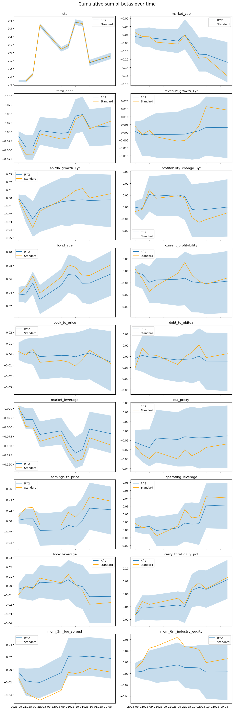
The different factor betas seem to follow similar trends in the “\(R^2\) prior” and standard models, though many of the betas in the “\(R^2\) prior” model are closer to 0, which demonstrates how the model is allocating explanatory power differently— some factors are barely taken into account at all.
Let’s explore this further by plotting the distribution of the betas for each factor in both models.
beta_r = r_idata.posterior["beta"].mean(dim=["date"])
beta_normal = multi_idata.posterior["beta"].mean(dim=["date"])
# Plot density overlays
az.plot_density([beta_r, beta_normal], data_labels=["R prior Beta", "Normal prior Beta"], shade=.8, outline=False)
plt.tight_layout()
plt.show()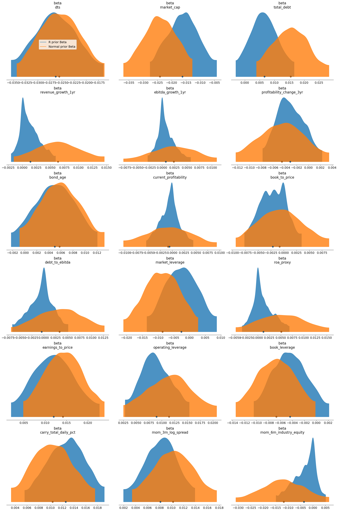
The two priors models produce different posterior distributions for many factors. The R² prior acts as a regularizer: it concentrates each beta closer to zero and reduces posterior variance, only allowing a coefficient to take on a meaningful magnitude when the data strongly supports it. This is visible across most panels — the blue (R² prior) distributions are tighter and more peaked at zero than the orange (Normal prior) distributions.
The factors that retain meaningful magnitude under the R² prior are the ones the data most strongly supports:
- DTS (~–0.025): the dominant factor, consistent with credit risk being the primary driver of return differentials.
- earnings_to_price (~+0.012) and operating_leverage (~+0.010): two value and leverage factors that come out clearly positive.
- carry_total_daily_pct (~+0.013): bonds with higher carry earn more, as expected.
- mom_3m_log_spread (~+0.009): bonds whose spreads have moved over the past 3 months continue in that direction.
Several factors get pulled essentially to zero by the R² prior (revenue and EBITDA growth, debt_to_ebitda, current profitability, roa_proxy). Under shrinkage, the data doesn’t support them having predictive power for next-day returns, so they are likely candidates for removal.
The R² prior approach not only improves model fit, but also acts as a form of feature selection, separating the factors that likely actually have explanatory power from those whose coefficients in the unregularized model were likely fitting noise.
Summary. Across this notebook we built progressively richer Bayesian models of next-day bond returns: from a single-factor StudentT regression on DTS with sector intercepts, to a per-day 18-factor model, to a regularized version with an R² prior. The progression illustrates the central tradeoff in factor modeling- more parameters capture more structure but risk overfitting- and shows how Bayesian regularization can navigate that tradeoff. The resulting factor rankings (DTS, carry, momentum, value/leverage) are consistent with established findings in the credit factor literature, which is a useful sanity check on the model.